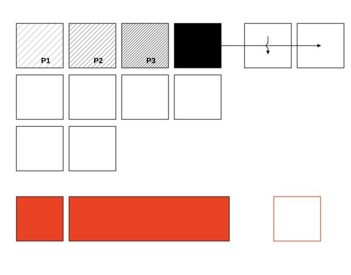

Gradientes de intensidad
Método de construcción narrativa en el que la intensidad de una obra se determina a partir de su oración tesis.
Primero se establece qué quiere decir la obra y hacia qué comprensión final quiere conducir al lector. A partir de esa tesis se diseñan gradientes progresivos mediante la combinación de acciones, escenas, diálogos, silencios, símbolos, conflictos, revelaciones y demás elementos narrativos.
La intensidad no se mide por la cantidad de acción, sino por cuánto acerca cada unidad narrativa al descubrimiento, demostración o comprensión de la tesis.
Por tanto, cada gradiente debe conservar la línea raíz de la tesis, aunque la obra pueda cambiar de ritmo, tono, escala o tipo de conflicto.
Tesis → dirección → gradientes → acumulación → revelación → síntesis.